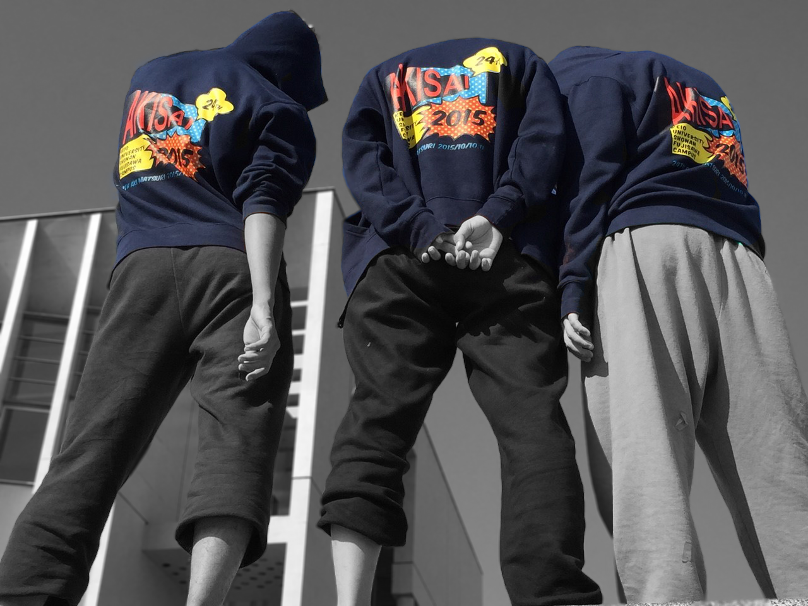

秋祭とは？
代表挨拶
第25回秋祭実行委員会、代表を務めます松室雄大と申します。
昨年度は多くの方々のご支援とご協力を賜りまして、第24回秋祭を盛大に開催することができましたことを略儀ながらこの場をお借りして心より御礼申し上げます。
さて、第25回秋祭のテーマは「Canvas For Smile」となっております。
このテーマには、SFCをキャンバスに見立て、秋祭にご来場くださった皆さまに自分の色を塗っていただきたい、皆さまの笑顔のために作った秋祭というキャンバスに足を運んで、楽しんでいただきたいといった思いが込められています。
また、「Canvas For Smile」の頭文字CFSはSFCにちなんでいて慶応義塾大学でも都会から離れたここ湘南藤沢キャンパスでしか出来ないことをしたいという私たちの意志を示しております。
本年度は、第25回という節目の年にふさわしいに祭にします。
実行委員一同、秋祭の成功に向けて精進して参りますので、どうぞ皆さま、よろしくお願い申し上げます。
第25回秋祭実行委員会 代表 松室雄大
